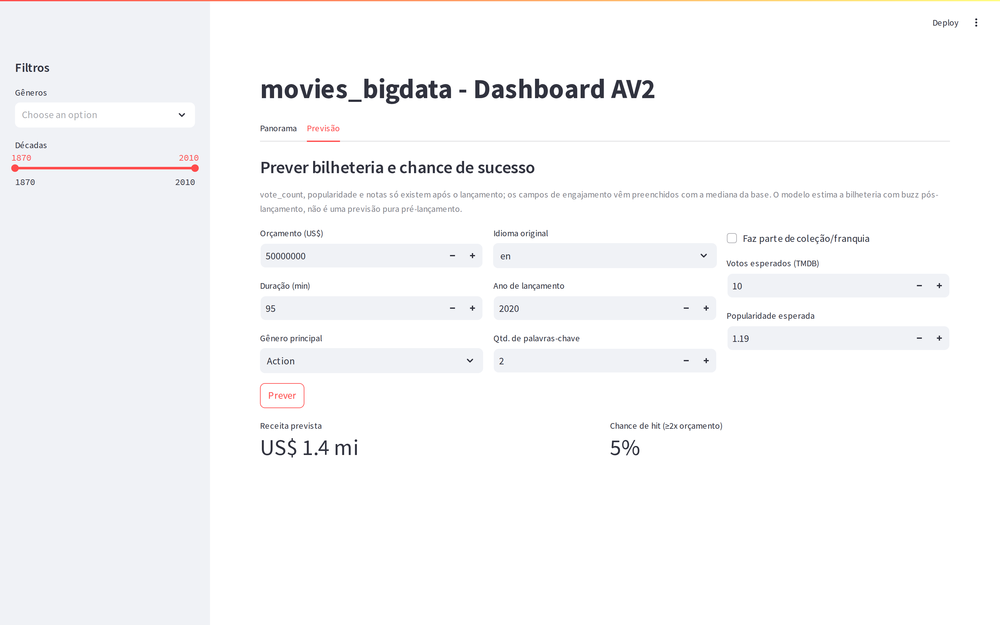

O PróximoGrande Sucesso
Um pipeline de Big Data que estima a bilheteria de qualquer filme a partir dos seus atributos e do buzz — e expõe por que prever antes da estreia ainda é a fronteira.
43.608 filmes · 5 fontes · modelo de predição (HistGradientBoosting)
Ninguém sabe
se vai dar certo.
Por que prever?
Cada filme é uma aposta de milhões feita anos antes da estreia — em qualquer gênero. Com o histórico de milhares de lançamentos, dá para estimar o risco antes de gastar o primeiro dólar.
O que construímos
- Um pipeline de Big Data completo — das fontes brutas ao destino analítico — sobre 43.608 filmes.
- Um modelo preditivo que estima bilheteria e probabilidade de sucesso a partir dos atributos do filme e dos sinais de engajamento.
- Uma demonstração em lançamentos de 2026 — de terror a ficção científica — com back-test multigênero contra a bilheteria real.
O Pipeline de Big Data
Arquitetura medalhão · Bronze → Silver → Gold
As 5 etapas obrigatórias
A fonte: 45 mil filmes
The Movies Dataset (Kaggle) — dados estruturados e semiestruturados (campos JSON de elenco, gênero e keywords). ≈45 mil filmes brutos → 43.608 após a limpeza.
kaggle.com/datasets/rounakbanik/the-movies-dataset
De bruto a valor
- Limpeza (Silver): remoção de IDs inválidos/duplicados, coerção numérica, exclusão de conteúdo adulto, orçamento/receita zero → nulo.
- Enriquecimento: parsing de campos JSON (gênero, elenco, keywords) e derivação de ROI, lucro, década e flag de franquia.
- Carregamento (Gold): dataset consolidado + 11 agregações gravados em CSV e Parquet colunar.
Stack open-source
Alternativas pagas para escala: Apache Spark / Databricks, Delta Lake e BI (Power BI / Tableau).
O que os dados
revelam
Quatro padrões que definem o sucesso comercial
Ação e aventura
dominam a receita
Os blockbusters concentram o faturamento total. Mas o jogo muda quando olhamos eficiência (ROI) — onde os baixos orçamentos brilham.
A produção explode,
a nota cai
A quantidade de filmes dispara década após década, enquanto a nota média dos usuários recua — saturação do mercado.
Orçamento e
buzz mandam
A receita tem forte correlação com o nº de votos (0,78) e o orçamento (0,73). Atenção: votos e popularidade só existem depois da estreia.
Dinheiro compra
receita — não ROI
O ROI não se correlaciona com nada (todos ≈ 0). E o pódio de retorno é dos baixos orçamentos — de animações clássicas a terror e drama indie: multiplicadores absurdos.
Sequências e franquias faturam mais — mas a eficiência (ROI) é imprevisível.
O modelo de
sucesso
Estimar bilheteria e chance de sucesso a partir dos atributos do filme e dos sinais de engajamento (buzz)
Honestidade primeiro
Separamos alvo de sinal: receita, lucro e ROI ficam de fora (seriam vazamento direto). Os sinais de engajamento — votos, popularidade, notas — entram, mas avisamos: só amadurecem depois da estreia.
- Entram: orçamento, gênero, duração, franquia, idioma, keywords + engajamento (votos, popularidade, notas).
- Modelo: Gradient Boosting (regressão de receita + classificação hit/flop).
Holdout 80/20 + validação cruzada 5-fold · 5.363 filmes com bilheteria reportada · R² em escala log · base trivial (classe majoritária) = 51%.
Bate o baseline — e sobrevive ao tempo
O Gradient Boosting supera a regressão linear — o ganho vem de capturar relações não-lineares entre orçamento, buzz e gênero.
Treinando em — filmes antigos e prevendo — posteriores, o desempenho cai pouco — não é só decorar o passado.
Três validações concordam (holdout · CV 5-fold · split temporal) — o resultado é robusto, não sorte de uma divisão.
Orçamento e
votos empatam
Nº de votos disputa o topo com o orçamento — quase empatados. O detalhe incômodo: votos só existem depois da estreia. O modelo se apoia, em boa parte, em buzz pós-lançamento.
A fronteira
pré-estreia
O que acontece com lançamentos recentes quando tiramos o buzz que o modelo mais usa
Três lançamentos recentes
Sem o buzz (que o modelo mais usa), a previsão antes da estreia desaba: o modelo crava "alto risco" nos três — Backrooms, previsto US$ 0,9 mi, fez US$ 155 mi. Ele aposta em fracasso justamente nos maiores sucessos.
Tire o buzz e o
modelo cega
Os mesmos três e mais dez lançamentos (13 ao todo). Com os votos preenchidos pela mediana, quase tudo despenca abaixo da diagonal: o modelo subestima de forma sistemática. Backrooms, Obsessão, Nosferatu — previstos em poucos milhões, arrecadaram centenas. O sinal que ele aprendeu a usar não existe antes da estreia.
O mesmo modelo, no seu teste próprio (com buzz real), acerta 76% · AUC 0,80. A queda aqui não é do modelo — é da informação que falta no pré-estreia.
US$ 0,6 mi.
A realidade: US$ 171 mi.
Conclusões & próximos passos
- Pipeline completo entregue e testado (Bronze→Gold, 11 tabelas, 2/2 testes).
- Análise: orçamento e buzz preveem receita; ROI é imprevisível.
- Modelo geral (qualquer gênero) acerta o miolo (AUC 0,80), mas depende de buzz pós-estreia.
- Limitação: métricas valem só para filmes com bilheteria reportada (viés de sobrevivência).
- Futuro: incorporar buzz antecipado (trailer, X, TikTok) — o sinal pré-estreia que falta.
- Futuro: elenco, sazonalidade de estreia e gasto de marketing.
Dashboard interativo

Duas abas: Panorama (filtros por gênero/década, gráficos Plotly, ranking de ROI) e Previsão — o formulário "teste seu próprio filme".
streamlit run dashboard/streamlit_app.py
README em formato de relatório ABNT + código versionado.
/codigo · /notebooks · /dados · /documentacao · /apresentacao
Perguntas?Que comece a sessão.
Da ingestão de ~45 mil filmes brutos à predição do próximo grande sucesso — em qualquer gênero — um pipeline de Big Data de ponta a ponta.